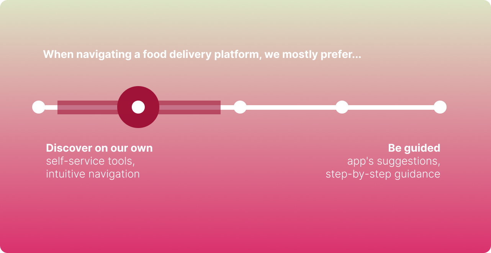
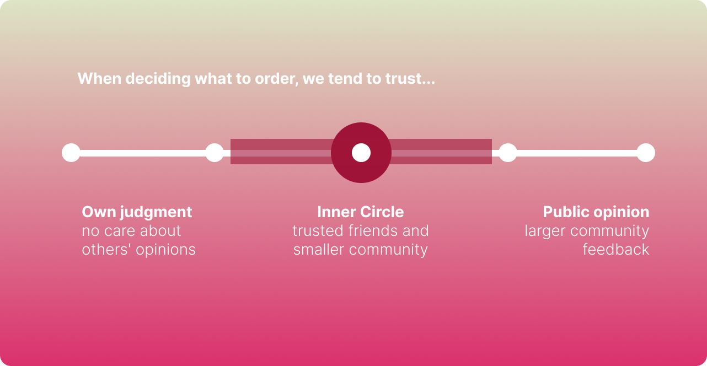
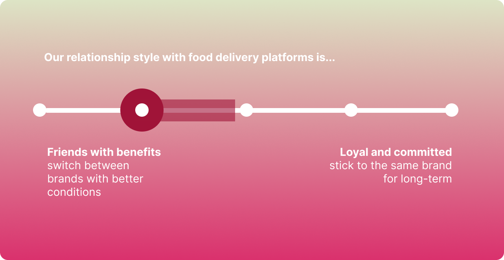
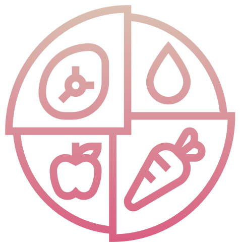

Motto
Lagom;
Not too little, not too much.
Just right.
Description
In Sweden, one in four residents has a foreign background, contributing to our diverse population. This diversity significantly influences our food scene, particularly in places like Stockholm, where immigrants have a notable impact on dining and food delivery. We often seek recommendations from our foreign friends when trying new restaurants or dishes.
Our culture places a high value on orderliness and cleanliness, both in public spaces and our digital lives. We're inclined to declutter our phones by removing unused apps and expect personalized content from food delivery platforms like foodora and UberEats.

What drives us
Having freedom when using the app and be the one in control
They don’t appreciate being pushed much in decision making by ads and x-sell.

The range covers more diversity of needs for guidance in terms of tech savviness, disabilities, different preferences of individuals.
10\12 participants mentioned that ...

The range covers more diversity of needs for guidance in terms of tech savviness, disabilities, different preferences of individuals.
What drives us
Authentic recommendations coming from reliable inner circle
Trusting to ratings and reviews is hard. Because it comes from one single source and might display fake or insufficient information. Unless the person is very trustworthy: friend, person the same nationality as cuisine of the restaurant, a professional chef, they tend to follow inner circle’s opinions.
What drives us
Practical and convenient platforms that are attentive and respectful
They are attentive to ethics and sustainability related topics such as riders conditions and food waste. It plays an important role in the decision making when they decide which app to use.
If they find the service that is practical and convenient but at the same time aligned with their values, they are ready to stick with it.

The range covers more diversity of needs for guidance in terms of tech savviness, disabilities, different preferences of individuals.
A food delivery platform is...
ATTRACTIVE when
Clean with minimal distractions
EASY TO USE when
Practical and convenient
RELEVANT when
Familiar yet trendy
UNIQUE when
Keeping up with local trends, events
Swedish users appreciate a more minimalistic colour palette with high contrast (calming colours), more negative space, bigger icons and images with less dense information.
Convenience for Swedish users stands for simplicity, order, straight-forwardness and “just enough” of information.
Seeing new trendy restaurants or food items as well as local products on festive times (e.g. Christmas tree) or seasonal products make food delivery brand feel more relevant and close to local traditions and lifestyles.
Brand visibility in public events and creative marketing communication of their support in various local festivals is considered unique for a food delivery brand.
Engage us with
Simple and Practical Experiences
Ideas and Recommendations
Ability to customise information density, notifications, swimlanes
Always accessible functionalities, greyed out if not needed
Breakdown of information for ratings and reviews, expandable when needed
Succinctly communicate the combination of the most important elements that make the experience simple and practical.
Engage us with
Respectful and Caring Attitude
Ideas and Recommendations
Communicate transparently on riders work conditions and wages
Set mutual trust by respecting their privacy and app preferences
Support local festivals and events by being next to their values
Show your stance on important topics that concerns us as such as ethical work conditions, sustainability, more balanced and healthy lifestyle.
Engage us with
Timely and Relevant Recommendations
Ideas and Recommendations
Context sensitive recommendations: e.g. seasonal, fresh
Lifestyle recommendations such as ‘after gym’, ‘low-carb week’
Mood-based recommendations such as ‘hungry mood’ ‘have no-time-mood’
Recommendations from trusted inner circle and community members
Late night options for weekend or festive days (e.g. party, NYE)
Inspire them to try new things based on their interests and lifestyle choices.
Engage us with
Sustainable and Health-Conscious Options
Ideas and Recommendations
Offer sustainable and health-conscious culinary experiences from meal options to cooking at home
Put emphasis on the quality and seasonality in food choices that align with their mindful approach to indulgence
Guide them in achieving their health and fitness goals with personalised dietary experience
Introduce new ways to help them reduce food waste

Help them live in harmony with nature and take good care of themselves.
Engage us with
Diverse and Intriguing Food Experiences
Ideas and Recommendations
Let them discover trendy restaurants and dishes suitable to their preferences
Give them possibility to book and experience a special restaurant (Dine-in Vertical)
Explore gourmet options for indulgence and surprise
Explore home-cooking ideas such as seasonal recipes
Help them discover diverse cuisines to occasionally indulge in culinary experiences.